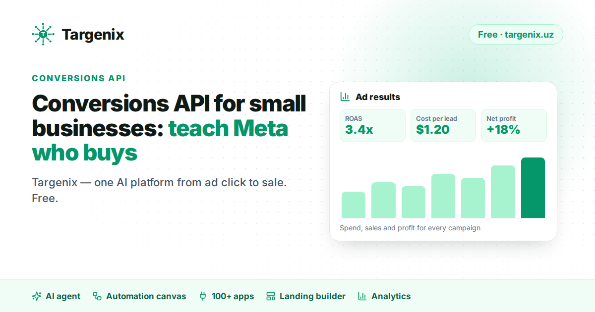

Conversions API for small businesses: teach Meta who actually buys
A practical guide for small advertisers on Facebook and Instagram, from the team behind Targenix.

Most small advertisers optimise their Facebook and Instagram campaigns for "leads." Meta then does exactly what it was asked: it finds people who are likely to fill in a form. Not people who are likely to buy.
That gap is why a campaign can show a cheap cost per lead and still lose money. The algorithm is learning from the wrong signal.
Pixel alone is no longer enough
The Meta Pixel runs in the visitor's browser. Ad blockers, iOS privacy settings and slow mobile connections all stop part of those events from reaching Meta. On landing pages that sell to mobile audiences, a noticeable share of conversions simply never arrives.
The Conversions API (CAPI) sends the same events from the server instead. Because the server is not affected by browser blockers, Meta receives a more complete picture. When both are used together with a shared event ID, Meta deduplicates them and counts each conversion once.
The signal that matters most: the sale
Sending "Lead" events from the server is good. Sending the outcome is better. When a lead turns into an order, a paid invoice or a delivered parcel, that event can also be sent to Meta. Now the ad system can learn which audiences produce buyers, not just form-fillers.
For businesses in Uzbekistan this usually means:
- The lead arrives from a lead form, a landing page or a DM conversation.
- The sales team or a CPA network updates its status — confirmed, delivered, cancelled.
- The confirmed status is sent back to Meta as a purchase-type event.
How Targenix handles it
Targenix is one AI platform from ad click to sale — free and no-code — for businesses that sell through Facebook and Instagram ads. On the tracking side it does three things:
- Landing pages built in Targenix (200+ templates or your own HTML, on your own domain with free SSL) send Pixel and server-side Conversions API events, deduplicated.
- Leads from forms, landing pages and AI conversations go through one pipeline, so every source is measured the same way.
- Sales and order statuses — including status sync from Uzbek CPA networks — are sent back to Meta, and the analytics show spend, cost per lead, revenue, profit and ROAS per campaign; CPL Guard pauses a campaign when its cost per lead goes over your limit.
You also get GA4, Yandex Metrica and TikTok Pixel on the same landing pages.
Before you change your optimisation goal
- Run CAPI next to the Pixel for at least a week and compare event counts.
- Make sure the purchase event carries a value and currency.
- Only switch the campaign objective to purchases once enough purchase events arrive every week.
Everything above is free — no subscription, no card, no paid tier. Details: targenix.uz/en.
Targenix today
Tracking is one part of the platform. The same free account replaces several paid tools:
- a 24/7 AI sales agent for Instagram and Facebook — AI sales agent;
- a landing page builder with Pixel and Conversions API built in — landing page builder;
- ad and profit analytics with CPL Guard — analytics;
- an automation canvas for comment and DM flows, and 100+ apps for every lead.